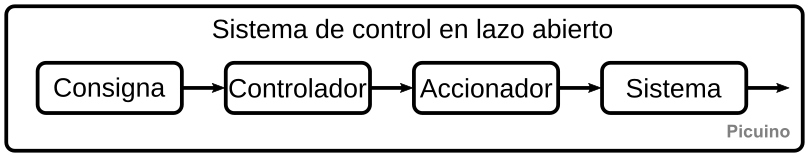
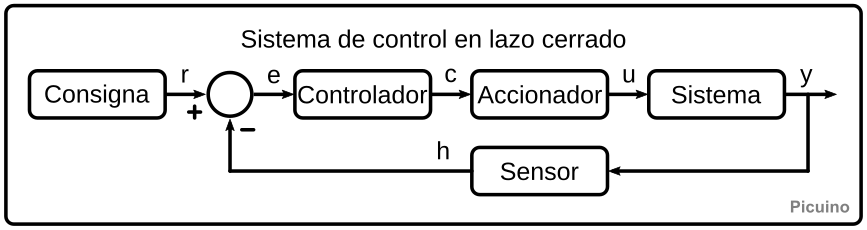
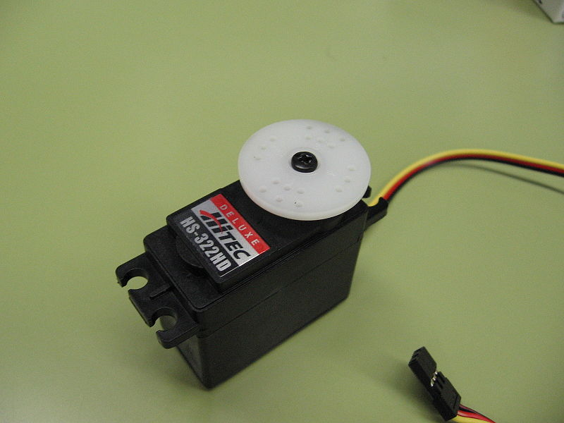

Control automàtic¶
Els controladors o reguladors automàtics formen part de molts dels dispositius que ens envolten, fins i tot si no en sabem.
Podem trobar exemples de controladors en el termòstat de calefacció o aire condicionat, al control de la temperatura del forn o de la nevera, al regulador de nivell de llum, en la direcció assistida dels cotxes, el sistema d’aturada en un pis dels ascensors o, fins i tot, al sistema d’ompliment d’aigua del dipòsit del vàter. Quan la velocitat, el moviment, la temperatura, la pressió o el nivell romanen regulats, hi ha un controlador que realitza aquest treball.
Per referir -se a aquest tipus de sistemes, s’utilitza la denominació de controladors automàtics o reguladors automàtics.
En aquesta pàgina es revisaran els diferents components d’un sistema de control automàtic i els diferents tipus de control existents, de bucle obert i bucle tancat.
Elements d’un sistema de control de bucles oberts¶
La imatge següent mostra un esquema del sistema de control més senzill, el control de bucle obert.
{kind=link}

En aquest esquema es poden reconèixer quatre blocs:
- Eslògan
És la part del sistema que descriu el que volem obtenir del controlador.
Per exemple, un eslògan pot ser una ordre manual en la qual seleccionem un temps de funcionament de 2 minuts en un microones. Un altre exemple seria l’ordre amb la qual seleccionem la potència de calefacció que volem obtenir en un enòleg de cuina.
- Controlador
És responsable de rebre un senyal d’eslògan o senyal de referència i convertir -lo en un senyal que fa que el sistema arribi a la referència desitjada.
Un exemple de controlador és un temporitzador que s’encén i s’apaga al forn de microones cada pocs segons per controlar la seva potència.
- Actuador
És l’encarregat de convertir el senyal de control, que té poca potència, en una acció sobre el sistema, amb una potència més gran.
Tornant a l’exemple del forn elèctric, l’actuador serà la resistència a la calefacció i el sistema d’energia que l’encengui. En el cas d’un servomecanisme, l’actuador serà el conjunt de transistors i el motor que mou el mecanisme.
- Sistema
També es diu de vegades planta, és el que voleu controlar.
En un forn, el sistema serà la caixa del forn on vulgueu controlar la temperatura. En el cas d’un servomecanisme, el sistema serà el motor i la caixa reductora la posició de la qual es vol controlar.
De vegades, l’eslògan, el controlador o l’actuador no tenen límits ben definits o no existeixen en cap sistema. En qualsevol cas, és interessant conèixer aquests elements a l’hora d’identificar les diferents parts d’un sistema de control.
Exemples de sistemes de control de bucles oberts¶
Podem trobar exemples de sistemes de control de bucles oberts en diversos dispositius del nostre entorn.
- Control de potència d’un forn de microones
L’eslògan ** ** és el control rotatiu amb el qual seleccionem el temps d’encesa.
El ** controlador ** està format per un temporitzador que s’encén al forn i el desactiva al final de l’hora enviada.
L’actuador ** ** és un Magnetrón que produeix els microones que escalfen la llet.
El sistema ** ** serà, per exemple, el got de llet que s’escalfa dins del forn.
- Control d'energia d'un escalfador elèctric
El ** eslògan ** és l’ordre que girem per aconseguir una potència mitjana o tota la potència.
El controlador ** ** és l’interruptor que selecciona entre una o dues resistències de calefacció.
L’actuador ** ** està format per resistències de calefacció i ventilador.
El sistema ** ** és l’habitació escalfada per l’aire calent del calefactor.
- Control de la intensitat de la llum
El ** Slogan ** és el `Menanceòmetre <https://es.wikipedia.org/wiki/potenci%C3%B3meter> __ o resistència variable que es converteix en una major o menor lluminositat.
El controlador ** ** és un circuit electrònic que decideix quant de temps es connectarà la làmpada diverses vegades per segon.
L’actuador ** ** és un circuit de potència electrònica i la làmpada que produeix llum.
El sistema ** ** és la sala amb més o menys il·luminació.
- Control de nivell de so en un equip d'àudio
El ** eslògan ** és el potenciòmetre que es mou per aconseguir un nivell de so més gran o menor.
L’actuador ** ** és l’amplificador i els altaveus de l’equip de música.
El sistema ** ** és la sala i el nivell de so que s’aconsegueix.
Un dels controladors de bucle obert més comuns és el ** temporitzador **. Es pot trobar en diversos dispositius com ara els llums de l'escala d'un edifici, les escales automàtiques automàtiques, el temporitzador d'un forn de microones, etc.
En els sistemes de bucle obert es pot controlar que el sistema rep de l’actuador més o menys potència, però el punt en què es trobarà exactament el sistema controlat no es pot controlar.
En el cas del forn de microones, per exemple, no podem estar segurs de la temperatura que la llet arribi a dins. Tampoc amb el calefactor elèctric podem saber exactament la temperatura que arribarà l’habitació. En ambdós casos, el resultat final dependrà de la mida del vaixell o de la sala, de la temperatura ambient, de l’aïllament, de la potència total del calefactor, etc.
Aquest desavantatge dels sistemes de bucles oberts no impedeix que s’utilitzin amb molta freqüència per la seva gran senzillesa i per ser molt robustes.
Elements d’un sistema de control de bucle tancat¶
La imatge següent mostra un esquema d'un sistema de control de bucle tancat.
{kind=link}

Aquest tipus de sistema de control resol el problema dels sistemes de bucle obert, que depenen de l’actuador, de les condicions ambientals, etc. El nom del bucle tancat prové del senyal del sensor que torna al controlador, tancant el bucle de control. Els elements del sistema de control del bucle tancat són els mateixos que els elements del sistema de control de bucles oberts amb dues addicions:
- Sensor
El sensor mesura l’estat o la variable per controlar el sistema (posició, temperatura, humitat, etc.) Això permet conèixer l’estat del sistema i corregir les desviacions perquè es pugui aconseguir l’estat desitjat.
Per exemple, en una nevera, el sensor de temperatura detecta la temperatura interior per apagar el motor quan fa massa fred i encendre el motor si la temperatura puja massa.
- Comparador
Aquest element està representat per un cercle de l'esquema. La seva funció és comparar el senyal de referència R que prové del lema i el senyal d’alimentació H que prové del sensor i calcular l’error que hi ha entre la resposta desitjada i l’estat real del sistema.
Des d’aquest error podeu arribar al sistema a l’estat desitjat, que és el que dicta l’eslògan.
Aquest tipus de control garantirà que el sistema estigui en estat desitjat independentment de les condicions ambientals.
Els senyals del sistema de control són els següents:
| Signar | Nom | Funcionar |
|---|---|---|
| ** r ** | ** Referència ** | És l’estat que s’ha d’assolir al sistema. |
| ** i ** | ** Error ** | És la diferència entre l’estat desitjat i l’estat real del sistema a controlar. |
| ** C ** | ** Control ** | És el senyal generat pel controlador. |
| ** o ** | ** Acció ** | És l’acció que s’exerceix al sistema per controlar -lo. |
| ** i ** | ** Sortida ** | És l’estat real que ha arribat al sistema per controlar -lo. |
| ** H ** | ** Feedback ** | És la mesura del sistema. |
Exemples de sistemes de control de bucles tancats¶
Com en el cas dels controladors de bucles oberts, també hi ha diversos dispositius diaris que tenen sistemes de control de bucles tancats. Es caracteritzen per tenir un sensor que permet mesurar l’estat del sistema i controlar -lo amb precisió.
Control de temperatura d’un ** nevera **.
Control de temperatura en un ** forn elèctric **.
Control d'ompliment d'aigua d'una ** cisterna ** del vàter.
** Adreça assistida ** d’un cotxe o d’un camió.
Control de posició d’un ** Servomechanisme **.
Sistema de marxa i parada a cada pis d’un ** ascensor **.
Obriu el control d’una ** porta automàtica **, que s’obre reaccionant a la presència d’algú.
{kind=link}

Referències¶
Wikipedia: Sistema de control <https://es.wikipedia.org/wiki/system_de_control> ``
Viquipèdia: Servomotor
[1] Ogata, Katsuhiko. Enginyeria de control moderna. Tercera edició. Saló de Prentice Editorial.
[2] Ogata, Katsuhiko. Sistemes de control de temps discrets. Segona edició. Saló de Prentice Editorial.